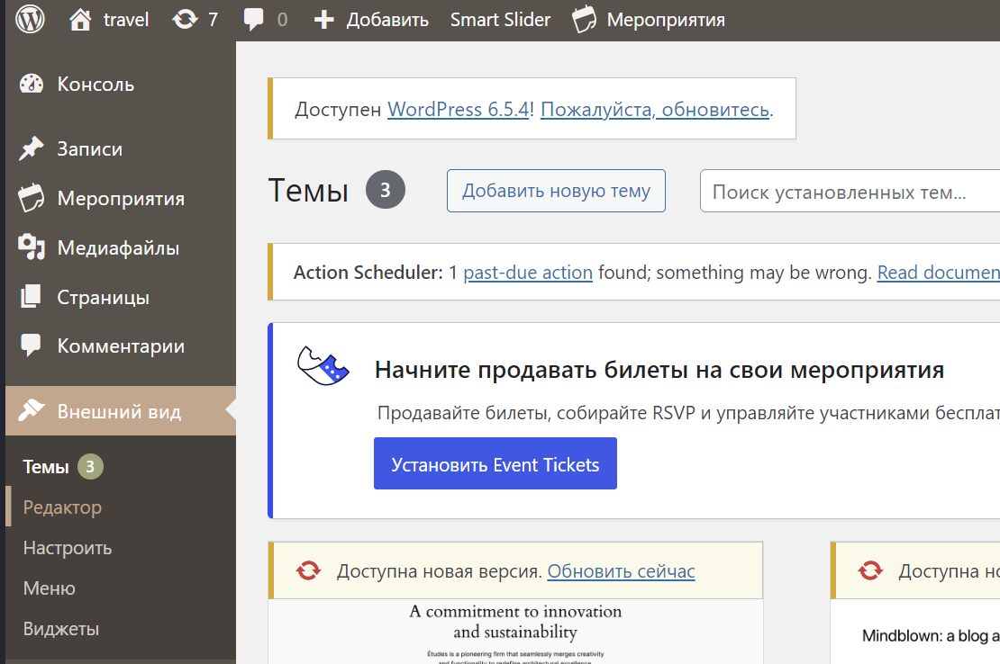
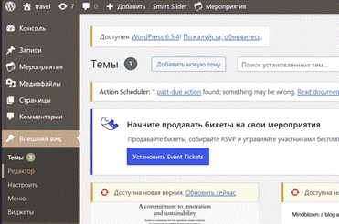
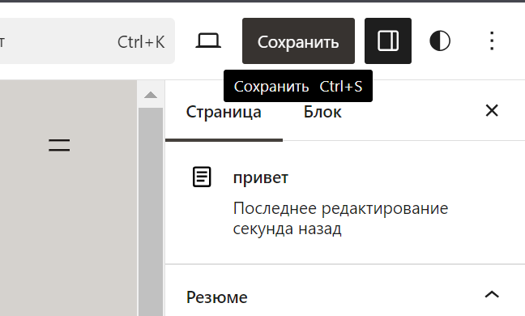

Билет 1
Агрегированные функции для анализа данных. GROUP BY в А-функциях. Приведите примеры.
Агрегатная функция выполняет вычисление над набором строк и возвращает одно значение. Производится расчет данных верхнего уровня на основе данных нижнего уровня. Агрегированные функции в базах данных используются для вычисления сумм, средних значений, минимумов, максимумов и других агрегированных результатов по группам данных. Оператор GROUP BY используется в SQL для группировки строк на основе значений столбца или столбцов и применения агрегированных функций к каждой группе. Агрегированные функции: sum, avg, min, max, count, std or stdev, var – вычисляет дисперсию Оператор GROUP BY позволяет проводить группировку данных и применять агрегированные функции к каждой группе отдельно, что полезно для анализа данных по различным категориям или группам в SQL.
Сумма покупок каждого клиента:
select customer_id, round(sum(sales_amount))
from sales
group by customer_id;
Максимальный и минимальный размеры заказа каждого клиента
select customer_id, min(sales_amount) as минимальный_заказ, max(sales_amount) as максимальный_заказ
from sales
group by customer_id;
Количество покупок каждого клиента
select customer_id, count(sales_transaction_date)
from sales
group by customer_id;
Создайте в CMS WordPress пользовательское меню из трех пунктов, к каждому из которых привязана отдельная страница. Разместите на страницах изображения, таблицы, маркированные списки и ссылки.
Как добавить страницы:
  Билет 2
Использование агрегации для очистки данных и проверки качества данных. Поиск пропущенных значений с помощью GROUP BY. Приведите примеры.
Использование агрегации для очистки данных и проверки качества данных может быть полезным при работе с большими объемами информации. Одним из способов проверки качества данных является поиск пропущенных значений в столбцах и подсчет их с помощью оператора GROUP BY. Вот несколько примеров:
Вывод всех клиентов с незаполненным номером телефона
select * from customers
where phone is null;
Поиск количества пропущенных значений в столбце "age" таблицы "users":
SELECT COUNT(*) AS missing_age_count
FROM users
WHERE age IS NULL;
Агрегация данных и использование GROUP BY позволяют эффективно очищать и проверять качество данных, включая поиск пропущенных значений. Вот несколько примеров использования агрегации и GROUP BY для этих целей:
Подсчет пропущенных значений в столбце
sql
SELECT COUNT(*) AS Missing_Values_Count
FROM Customers
WHERE Age IS NULL;
Расчет среднего значения с исключением пропущенных значений
SELECT AVG(Цена) AS AveragePrice
FROM Products
WHERE Цена IS NOT NULL;
Предположим, у нас есть таблица "Заказы" с колонками "Номер заказа", "Дата" и "Сумма". Мы хотим найти сумму заказов для каждой даты и выяснить, есть ли пропущенные даты.
SELECT Дата, SUM(Сумма) AS TotalAmount
FROM Orders
GROUP BY Дата
ORDER BY Дата;
Этот запрос использует GROUP BY для группировки данных по столбцу "Дата" и функцию SUM() для расчета суммы столбца "Сумма" внутри каждой группы.
Результаты будут отсортированы по дате. Если в исходных данных пропущена определенная дата, она не будет присутствовать в результирующем наборе.
Создайте в CMS Joomla пользовательское меню из трех пунктов, к каждому из которых привязана отдельная страница. Разместите на страницах изображения, таблицы, нумерованные списки и ссылки.
Заходим на сайт http://localhost/joomla/administrator/index.php
Билет 3
Оконные функции для анализа данных. Ключевые слова в оконных функциях. Статистика с оконными функциями. Приведите примеры.
Оконная функция- это функция, которая работает с выделенным набором строк и выполняет вычисления для этого набора строк в отдельном столбце. Оконные функции являются мощным инструментом для анализа данных в рамках определенного окна или группы записей. Они позволяют выполнять вычисления и агрегирование данных на основе предопределенного порядка или группировки. Виды оконных функций: 1.Агрегирующие (over) 2.Ранжирующие (rows/range) 3.Функции смещения (lag/lead, предыдущая/последующая) Ниже приведены некоторые ключевые слова и примеры оконных функций, а также использование оконных функций для статистического анализа данных:
1. OVER: Это ключевое слово указывает на определение окна для выполнения функции. Оно может принимать различные параметры, такие как PARTITION BY (группировка данных), ORDER BY (порядок данных) и другие.
Рейтинг клиентов по сумме покупок
select customer_id, sum(sales_amount), rank() over(order by sum(sales_amount) desc)
from sales
group by 1;
Накопительный итог до 2016 года для каждого дилерского центра
select dealership_id, sales_transaction_date, sales_amount,
sum(sales_amount) over(partition by dealership_id order by sales_transaction_date rows BETWEEN unbounded preceding AND current row) as Накопительный_итог
from sales
where dealership_id is not null and sales_transaction_date < '01.01.2016';
Вывод значения следующего размера заказа
select sales_transaction_date, sales_amount, lead(sales_amount) over (order by sales_transaction_date) AS размер_следующего_заказа
from sales;
2. ROWS/RANGE: Эти ключевые слова определяют размер окна или диапазон данных, которые будут использоваться для выполнения функции.
Расчет среднего значения продаж за последние 7 дней
SELECT Дата, Сумма,
AVG(Сумма) OVER (ORDER BY Дата ROWS BETWEEN 6 PRECEDING AND CURRENT ROW) AS AverageSales
FROM Продажи;
3. LAG/LEAD: Эти функции позволяют получить значения предыдущей или следующей записи внутри окна.
Расчет разницы в продажах между текущим и предыдущим днем
SELECT Дата, Сумма,
Сумма - LAG(Сумма) OVER (ORDER BY Дата) AS SalesDifference
FROM Продажи;
Оконные функции могут быть использованы для выполнения различных статистических вычислений, таких как среднее значение, медиана, стандартное отклонение и другие. Эти функции позволяют анализировать данные внутри определенного окна, что дает более гибкие и детальные результаты анализа данных.
.Создайте в CMS Joomla три роли: зарегистрированный пользователь, менеджер и директор. При входе у каждого из них должно появляться меню, состоящее из двух пунктов. Первый пункт открывает страницу, общую для всех пользователей, а второй - только для соответствующей роли.
Билет 4
Использование Python в базе данных SQLAlchemy (алхимия). Использование Python с ноутбуками Jupyter. Чтение и запись в базу данных с помощью Pandas. Выполнение визуализации данных с помощью Pandas.
Python является мощным языком программирования для работы с базами данных и анализа данных. Вот некоторые ключевые инструменты и подходы, которые можно использовать: 1. SQLAlchemy: SQLAlchemy - это популярный инструмент (ORM (технология программирования, которая связывает базы данных с концепциями объектно-ориентированных языков программирования, создавая «виртуальную объектную базу данных») библиотека) в Python для работы с базами данных. Он обеспечивает абстракцию над различными системами управления базами данных (СУБД) и позволяет создавать, читать, обновлять и удалять данные. SQLAlchemy предоставляет ORM (объектно-реляционное отображение) для более удобного взаимодействия с базой данных. Пример использования SQLAlchemy для подключения к базе данных SQLite и выполнения запроса:
from sqlalchemy import create_engine
# Подключение к базе данных SQLite
engine = create_engine('sqlite:///database.db')
# Выполнение запроса
result = engine.execute("SELECT * FROM my_table")
for row in result:
print(row)
2.Использование Python с ноутбуками Jupyter: Ноутбуки Jupyter предоставляют интерактивную среду для выполнения Python-кода, анализа данных и визуализации. Вы можете использовать библиотеки, такие как Pandas и Matplotlib, для чтения, обработки и визуализации данных в ноутбуках Jupyter. 3. Чтение и запись в базу данных с помощью Pandas: Pandas - это мощная библиотека для анализа данных в Python. Она также предоставляет удобные методы для чтения и записи данных в базу данных через SQLAlchemy. Пример чтения данных из базы данных в Pandas DataFrame (многомерный массив(таблица), в котором столбы являются объекты класса Series):
Пример чтения данных из базы данных в Pandas DataFrame (многомерный массив(таблица), в котором столбы являются объекты класса Series):
import pandas as pd
from sqlalchemy import create_engine
# Подключение к базе данных SQLite
engine = create_engine('sqlite:///database.db')
# Чтение данных в DataFrame
df = pd.read_sql_query('SELECT * FROM my_table', engine)
Пример записи данных из DataFrame в базу данных:
# Запись данных из DataFrame в базу данных
df.to_sql('new_table', engine, if_exists='replace')
4. Визуализация данных с помощью Pandas: Pandas предоставляет встроенные методы для визуализации данных. Вы можете использовать методы, такие как `plot()`, `plot.bar()`, `plot.hist()`, чтобы создавать графики и диаграммы из ваших данных. 1.plot()- линейная 2.plot.bar() - столбчатая 3.plot.hits() - гистограмма Пример выполнения визуализации данных с помощью Pandas:
Пример выполнения визуализации данных с помощью Pandas:
import pandas as pd
# Создание DataFrame
data = {'Страна': ['Россия', 'США', 'Китай', 'Германия'],
'Население': [144, 328, 1404, 83]}
df = pd.DataFrame(data)
# Визуализация данных
df.plot.bar(x='Страна', y='Население', title='Население по странам')
Билет 5
Вопрос 5:
Текст вопроса и ответа на него...
SQL или другой код, если необходимо
Рассчитать самую низкую цену, самую высокую цену, среднюю цену и стандартное отклонение цены для всех продуктов, которые когда-либо продавала компания. Проанализировать и рассчитать стоимость продуктов, используя агрегатные функции с условием GROUP BY.
Менеджер по маркетингу хочет знать минимальное, максимальное, среднее и стандартное отклонение цены для каждого типа продукта. Вычислить и отобразить данные, используя условие HAVING
select dealership_id, product_id, min(sales_amount), max(sales_amount), round(avg(sales_amount)) as средняя_цена, STDDEV(sales_amount) as cтандартное_отклонение
from sales
where dealership_id is not null
group by 1, 2
having min(sales_amount)<> max(sales_amount)
order by 1, 2;
Билет 6
Вопрос 3:
Текст вопроса и ответа на него...
SQL или другой код, если необходимо
Компания хочет повысить в должности продавцов в своих региональных дилерских центрах. Для этого необходимо узнать стаж работы сотрудников на занимаемой должности. Написать запрос, который ранжирует продавцов в соответствии с датой их приема на работу для каждого дилерского центра.
select dealership_id, salesperson_id, hire_date, dense_rank() over(partition by dealership_id order by hire_date) as рейтинг
from salespeople;
Билет 7
Вопрос 3:
Текст вопроса и ответа на него...
SQL или другой код, если необходимо
Чтобы повысить эффективность продаж, отдел продаж решил покупать обед для всех продавцов в компании каждый раз, когда они превышают цифру лучшего ежедневного общего дохода, достигнутого за последние 30 дней. Напишите запрос, который выводит общий объем продаж в долларах за определенный день и цель, которую продавцы должны превзойти на этот день, начиная с 1 января 2019 года.
with daily_sales as (
select date(sales_transaction_date) as sales_date, sum(sales_amount) as daily_sales
from sales
group by date(sales_transaction_date)
)
select sales_date, daily_sales, max(daily_sales) over (
order by sales_date
rows between 30 preceding and current row
) as target
from daily_sales
where sales_date >= '2019-01-01';
Билет 8
Вопрос 3:
Текст вопроса и ответа на него...
SQL или другой код, если необходимо
Отдел продаж хочет видеть, как работает компания по направлению продажи в целом, а также как работают отдельные дилерские центры внутри компании. Чтобы достичь этого, руководитель отдела продаж хотел бы, чтобы вы провели для него анализ: ✔ Рассчитайте общую сумму продаж по дням за все дни 2018 года (то есть до даты 1 января 2019 года); ✔ Рассчитайте скользящее среднее значение за 30 дней для ежедневного количества сделок купли-продажи.
with daily_sales as (
select dealership_id, date(sales_transaction_date) as sales_date, sum(sales_amount) as daily_sales
from sales
group by 1, date(sales_transaction_date)
),
sum_dealership as (
select dealership_id, sum(sales_amount) as sum_2018
from sales
group by 1)
select dealership_id, sales_date, daily_sales, avg(daily_sales) over(
order by sales_date
rows between 30 preceding and current row)
as скользящее_среднее,
sum_2018 as сумма_за_2018
from daily_sales
join sum_dealership using(dealership_id)
where sales_date >= '01.01.2018' and sales_date < '01.01.2019' and dealership_id is not null
group by 1, 2, 3, 5
order by 1, 2;
Второй вариант:
SELECT DATE(sales_transaction_date) AS day, SUM(sales_amount) AS total_sales FROM sales
WHERE sales_transaction_date >= '2018-01-01' AND sales_transaction_date < '2019-01-01'
GROUP BY DATE(sales_transaction_date)
ORDER BY DATE(sales_transaction_date);
Билет 10
Вопрос 3:
Текст вопроса и ответа на него...
SQL или другой код, если необходимо
Билет 11
Вопрос 3:
Текст вопроса и ответа на него...
SQL или другой код, если необходимо
Билет 12
Вопрос 3:
Текст вопроса и ответа на него...
SQL или другой код, если необходимо
Билет 13
Вопрос 3:
Текст вопроса и ответа на него...
SQL или другой код, если необходимо
Билет 14
Вопрос 3:
Текст вопроса и ответа на него...
SQL или другой код, если необходимо
Билет 15
Вопрос 3:
Текст вопроса и ответа на него...
SQL или другой код, если необходимо
Билет 16
Вопрос 3:
Текст вопроса и ответа на него...
SQL или другой код, если необходимо
Билет 17
Вопрос 3:
Текст вопроса и ответа на него...
SQL или другой код, если необходимо
Билет 18
Вопрос 3:
Текст вопроса и ответа на него...
SQL или другой код, если необходимо